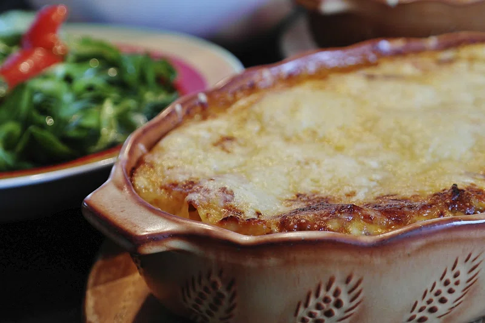

Lasagna

Description
This is the lasagna recipe I discovered at the same time as I discovered runes (bit of a gruesome story, that).
It's full of delicious ingredients that definitely weren't available to the Norse at the time, but hey, perks of being a god right?
Anyway, let's get right to it!
Ingredients
- Veggies :
- 3 large carrots
- 1 bell pepper
- 1 courgette
- 1 onion
- large bunch of spinach
- Tomato sauce :
- 1 can tomatoes
- bunch of basil
- 2 cloves garlic
- red pepper flakes
- Other ingredients:
- olive oil
- salt and pepper
- 2 cups cottage cheese
- 2 balls mozzarella
- 9 lasagna sheets
Steps
- Preheat the oven to 220 degrees.
- Cook all veggies except spinach until soft and starting to brown.
- Add spinach in batches until wilted.
- Blend tomato sauce ingredients, with olive oil and salt to taste.
- Layer sauce, lasagna sheets, cottage cheese and veggies until done.
- Finish with cottage cheese layer, then add mozzarella
- Bake covered for 20 mins, then uncovered until browned.
- Let cool before serving.